Hindu Americans are about 1% of the U.S. adult population and they are at the top of nearly every economic indicator the data tracks. This paper profiles that community across three domains: educational attainment, household income and occupational sorting, and anti-Hindu hate crime, using the Census ACS, two Pew Research Center surveys, and 28 years of FBI data. A Kitagawa decomposition shows that 50% of the income premium is driven by education endowment, 30% by higher returns to education conditional on degree level, and a genuine structural returns premium exists even after accounting for what people study. The crime picture runs against the success narrative: anti-Hindu incidents have nearly tripled since the early period, with a particularly sharp acceleration post-2019.
The U.S. Census does not ask about religion, which creates a methodological challenge for any study of Hindu Americans specifically. The workaround used here is an Indian-ancestry proxy in ACS microdata — justified by Pew's 2023 finding that roughly 75% of Indian Americans identify as Hindu. For direct religious identification, I draw on the Pew 2014 Religious Landscape Study, which cross-tabulated education and income against religious affiliation across a nationally representative sample.
The bachelor's degree attainment rate for Indian Americans is 77%. The national average is 35.5%. Even among Asian Americans as a group — already a high-attainment population — the rate is only 57.4%. The graduate degree gap is even more striking: 43% of Indian American adults hold a master's, professional, or doctoral degree, which is nearly three times the national rate. When you look at graduate attainment specifically, this group is at a different altitude from everyone else.
Looking across religious groups using the Pew 2014 data, Hindus rank first in college attainment at 77%, ahead of Jews (58%), Episcopalians (59%), and Presbyterians (60%). This cross-religious comparison matters because it controls for racial and ethnic composition — it tells you something about the community specifically, not just the racial group it overlaps with. The generational pattern shows a slight decline from first-generation immigrants (79% bachelor's+) to the second generation (71%), which is consistent with regression toward the mean documented in the immigrant assimilation literature, though even second-generation rates remain roughly double the U.S. average.
The nativity data gives important context for where this attainment comes from. Roughly 72% of Indian Americans are foreign-born — one of the highest foreign-born shares of any major ethnic group in the country. That share reflects decades of H-1B and employment-based immigration policy that selects explicitly for workers in specialty occupations requiring at least a bachelor's degree. The selection mechanism is institutional, not merely cultural: the visa system filters before arrival, and the resulting population inherits those selection effects in every outcome measure. The generational decline in attainment is therefore expected rather than alarming — it reflects regression from an extremely filtered immigrant cohort toward a more representative second generation.
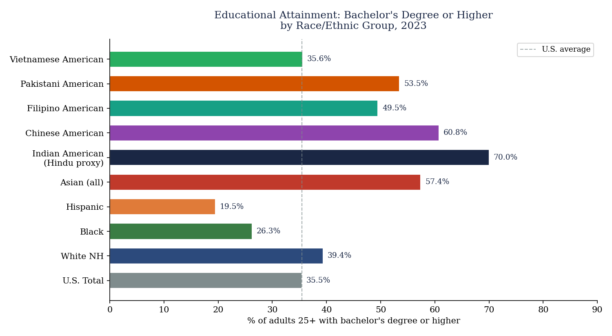
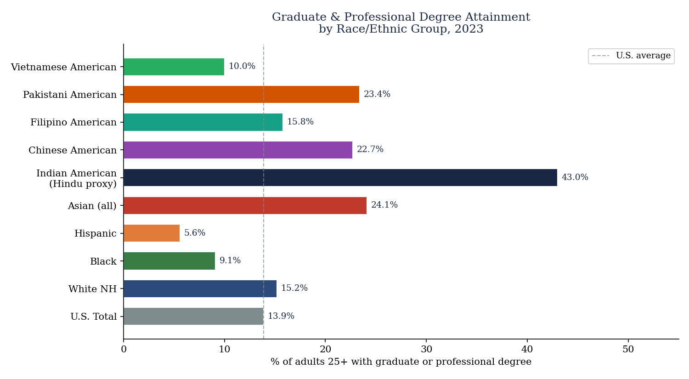
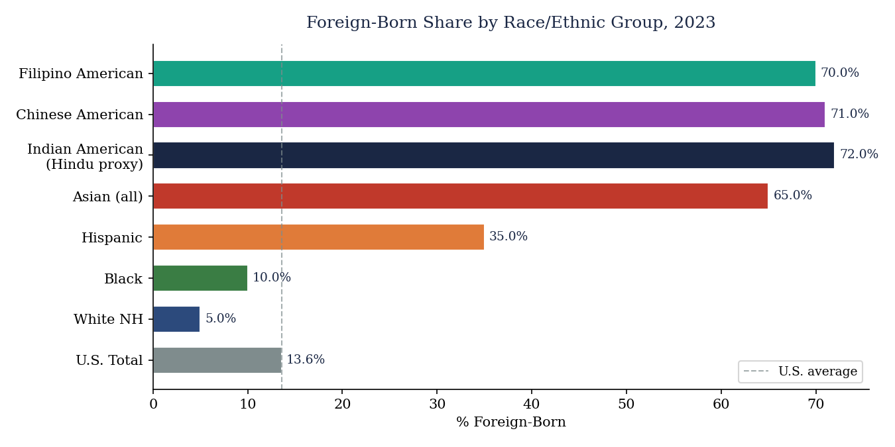
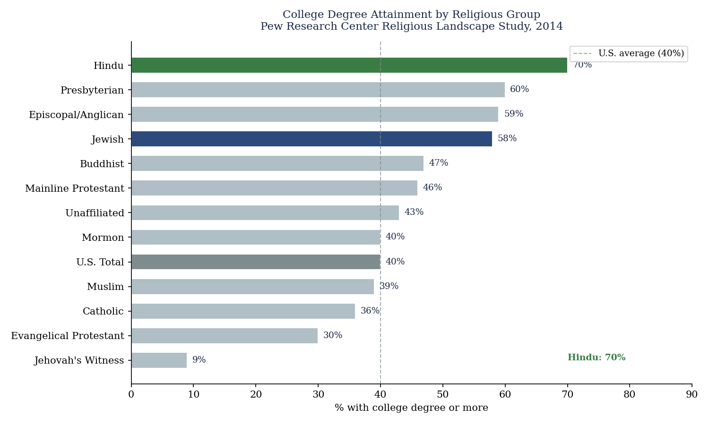
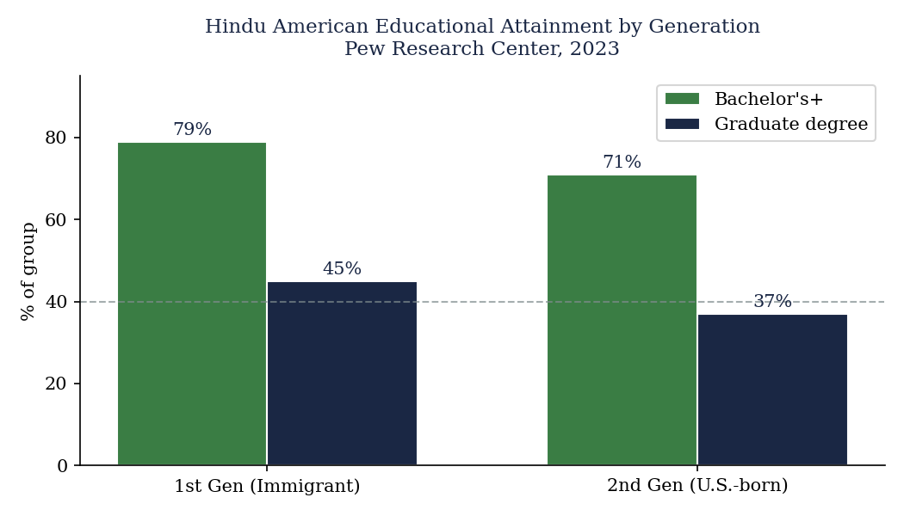
| Group | Bachelor's+ | Graduate Degree | vs. U.S. Average |
|---|---|---|---|
| Hindu / Indian American | 77% | 43% | +41.5 pp |
| Jewish American (Pew 2014) | 58% | — | +22.5 pp |
| Asian American (all) | 57.4% | — | +21.9 pp |
| White non-Hispanic | ~40% | ~15% | — |
| U.S. National Average | 35.5% | ~15% | baseline |
Hindu Americans rank first among all major religious groups in college degree attainment at 77%, more than double the national average and ahead of every other group in the Pew survey. The high foreign-born share (~72%) traces this premium directly to employment-based immigration filtering, which selects for degree holders before arrival. The generational descent from 79% to 71% is expected regression from an unusually filtered first-generation baseline, not evidence of assimilation failure.
Indian American median household income reached $145,000 in 2023, approximately 80% above the U.S. median of $80,610. This exceeds all other major racial and ethnic groups, including Asian Americans broadly ($109,360) and Chinese Americans ($104,000). Among religious groups in the Pew data, Hindus rank second in the share with family income above $100,000 at 43%, behind only Jewish Americans at 46%. The income distribution is heavily right-skewed: 34% of Hindu Americans report household income above $150,000, compared to a small fraction of the general population.
The Pew 2023 survey allows a more precise cut: comparing Hindu Indian Americans to non-Hindu Indian Americans (mostly Sikh, Christian, Muslim, and secular). Hindu Indians outperform non-Hindu Indians across every major economic indicator: median income, STEM concentration, and graduate degree rates. This within-ethnicity comparison is important because it isolates religion from race: the Hindu premium is not just an Indian American premium, it exists even when the comparison group is drawn from the same country of origin.
The income distribution data reinforces the right-skew story. Nearly 36% of Hindu American households report income above $150,000, compared to 8% of U.S. households nationally. The mass of the distribution sits above the national median, with only a small share in the lower income brackets. This is a structurally different income distribution, not merely a shifted one; the tails are asymmetric in a way that the median alone understates.
The occupational story explains most of the income story. Forty percent of Indian American workers are in computer, engineering, or science occupations — nearly six times the U.S. average of 7% and more than double the rate for Chinese Americans at 28%. Software developers account for 18.2% of Indian American workers, 3.8 times the national rate. Physicians and surgeons account for 8.4%, 5.2 times the national rate. These two occupations alone, with median wages of $130,000 and $250,000 respectively, do a lot of the work in pulling up the group mean. The broader occupational distribution further illustrates the concentration: management, business, and professional occupations dominate, with near-absence in agriculture, construction, and service trades that make up a larger share of other groups' employment.
Geographically, the community is concentrated where the jobs are. California hosts roughly 680,000 Indian Americans, followed by New York at 370,000 and New Jersey at 340,000. New Jersey has the highest state share at 3.7% of the total population. This clustering around Silicon Valley, the Boston Route 128 corridor, and the New York metro area reflects both the pull of technology employment and established community networks that reduce job search costs for new arrivals.
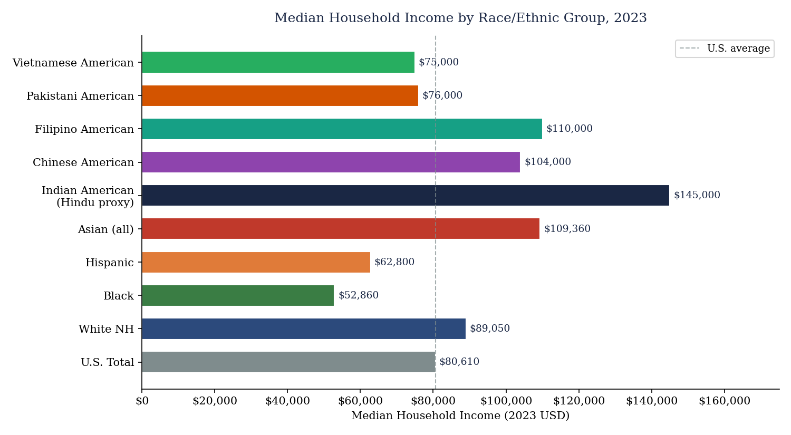
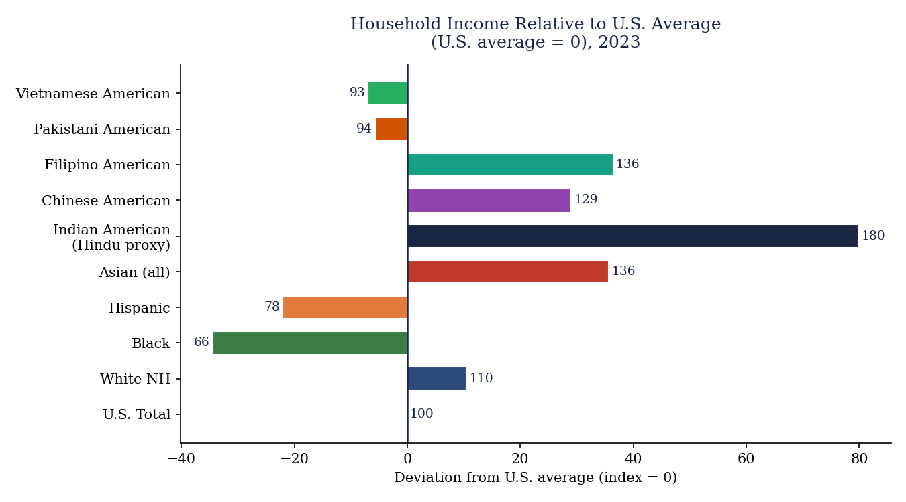
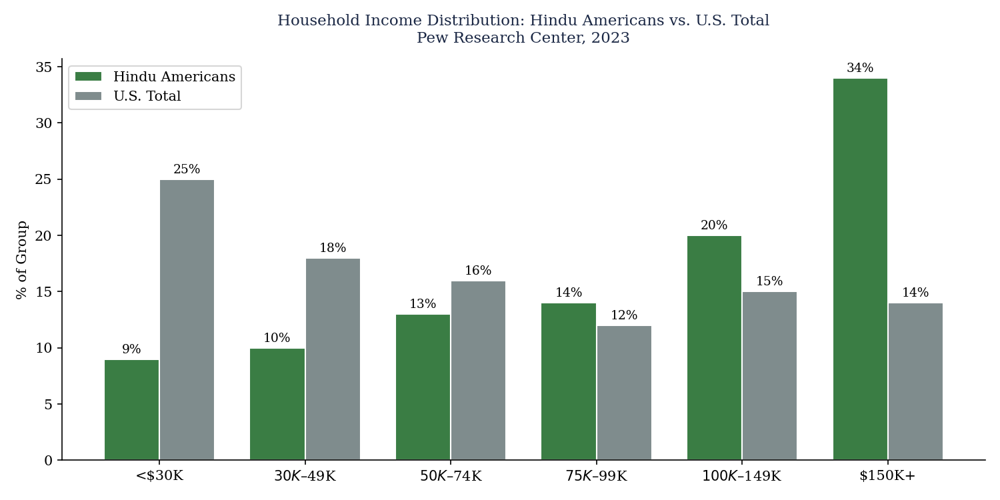
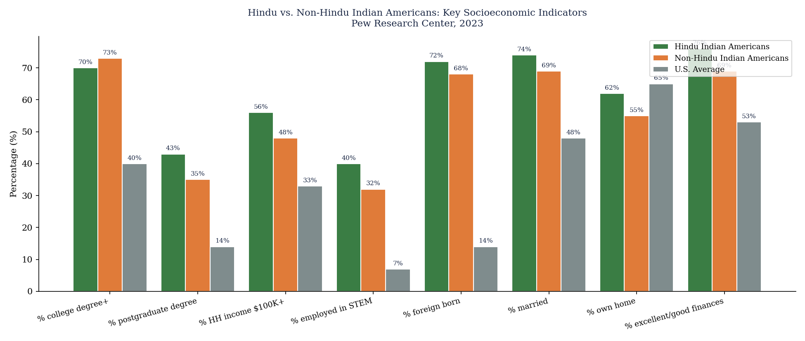
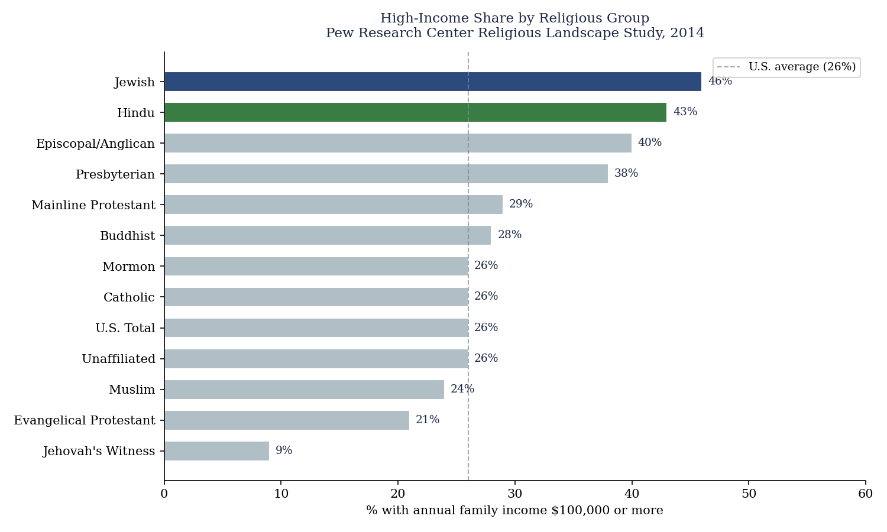
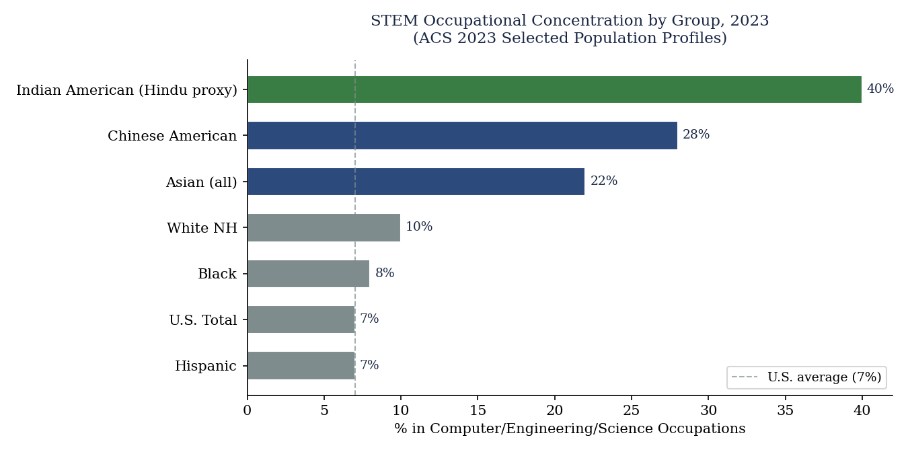
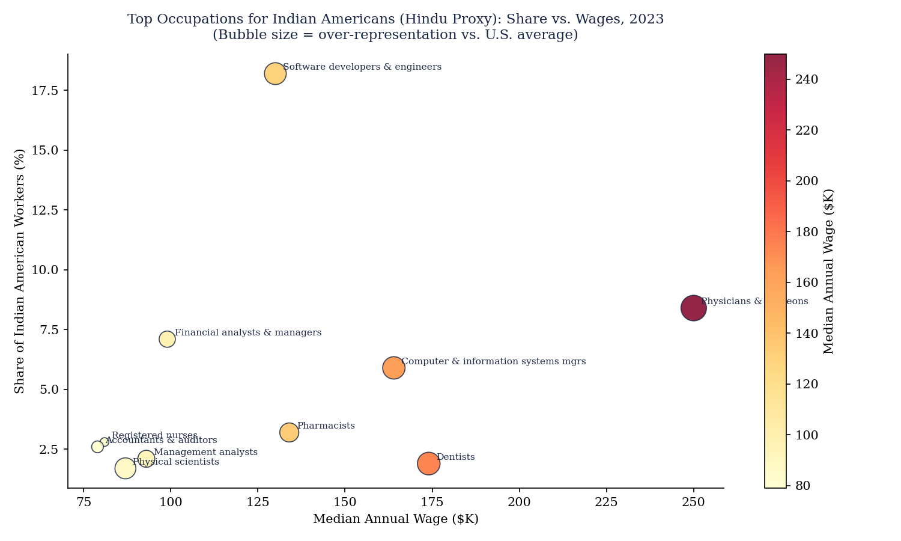
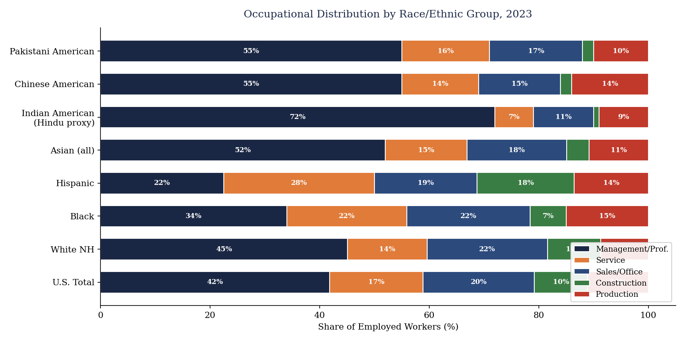
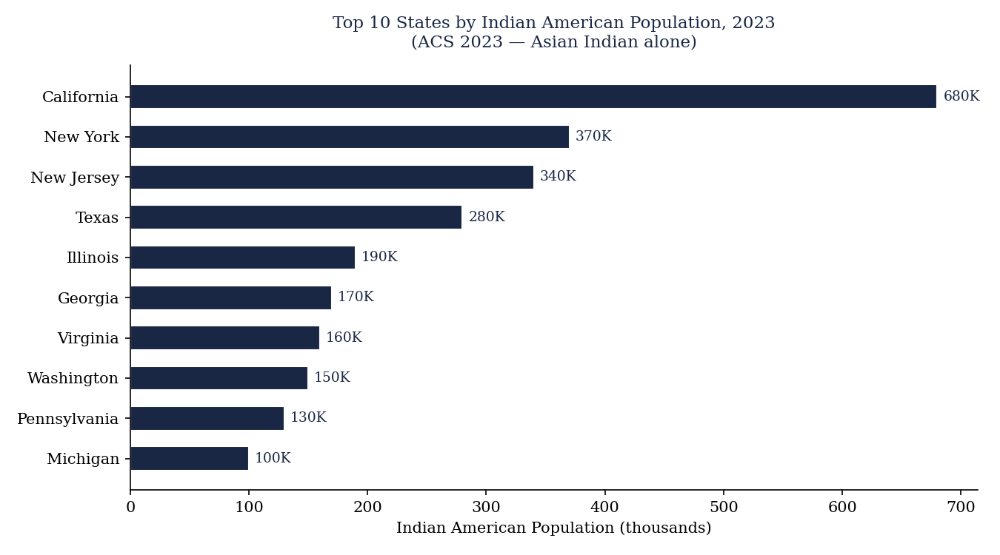
| Occupation | Share of Indian Amer. | Median Wage | Over-Rep. vs. U.S. |
|---|---|---|---|
| Software developers & engineers | 18.2% | $130K | 3.8× |
| Physicians & surgeons | 8.4% | $250K | 5.2× |
| Financial analysts & managers | 7.1% | $99K | 2.1× |
| Computer / IS managers | 5.9% | $164K | 4.0× |
| Pharmacists | 3.2% | $134K | 2.9× |
| Dentists | 1.9% | $174K | 4.1× |
| Physical scientists | 1.7% | $87K | 3.5× |
The Hindu income premium holds even within the Indian American population: Hindu Indians outperform non-Hindu Indians on every major economic metric. The income distribution is not merely shifted upward; it is structurally skewed right, with more than a third of households above $150,000. STEM concentration at 40% (6× the national rate) and extreme over-representation in software engineering and medicine are the proximate mechanisms driving this outcome.
The income premium is $50,350 per year, the gap between Indian American mean earnings and the U.S. average. The interesting question is how much of that is because of higher education and how much is because of something the education numbers do not capture. The Kitagawa decomposition answers that by splitting the gap into an endowment effect (what would happen if the minority group had the national education distribution but their own earnings at each level) and a returns effect (what would happen if they had the national education distribution but kept their own earnings at each level).
The education endowment effect accounts for $25,240, or 50% of the gap. This is the part that is straightforwardly explained by the fact that Indian Americans have dramatically higher education levels. If you gave the average American worker the same education distribution as Indian Americans, median earnings would rise by about $25,000. That is real, but it is only half the story.
The returns effect accounts for $15,310, or 30% of the gap. This is the part that survives education controls. Even at equivalent degree levels, Indian American workers earn more than the national average, consistent with sorting into higher-paying specializations within each credential category (software engineering rather than teaching, surgery rather than general practice), selective immigration filtering under H-1B and employment-based visas, and possible network-based wage premiums. An interaction term between the two effects accounts for the remaining 19%.
The education-income scatter visualizes the relationship geometrically: each group occupies a distinct position on the education-income frontier. Indian Americans sit in the upper-right corner, the highest on both axes, but the slope of the line connecting their position to the national average is steeper than what education alone would predict. That excess slope is what the returns component measures: conditional on having a degree, this group earns more. The scatter also shows that some high-attainment groups (e.g. Filipino Americans) achieve comparable education but lower income, suggesting the occupation channel rather than education alone is doing the heavy lifting for Indian Americans specifically.
$s_i$ is the share of workers at education level $i$; $w_i$ is median earnings at education level $i$. Superscripts $IA$ and $US$ denote Indian American and national averages respectively. The endowment effect captures the role of education sorting; the returns effect captures differential earnings at equivalent credentials.
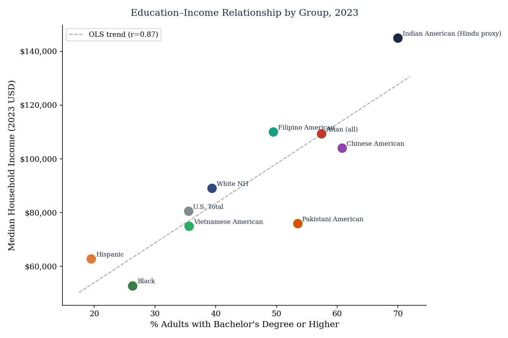
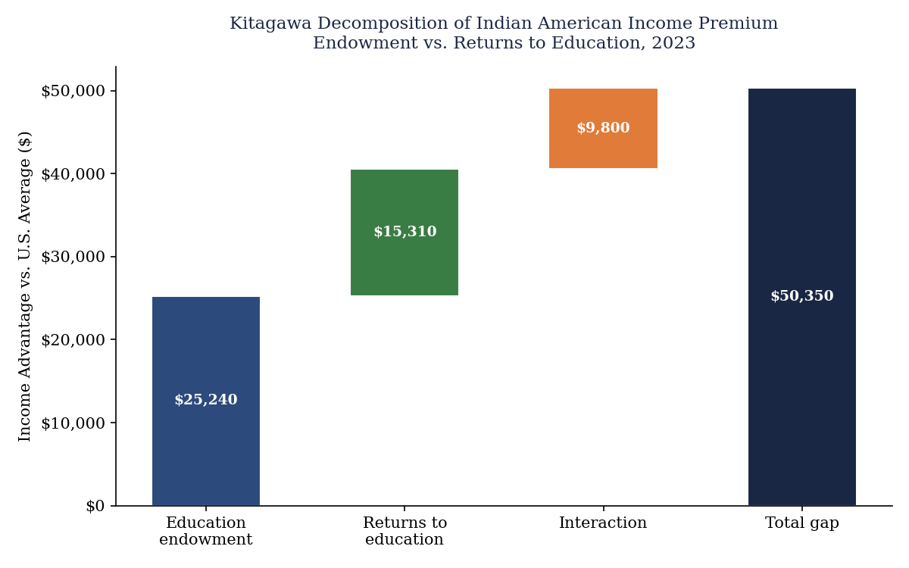
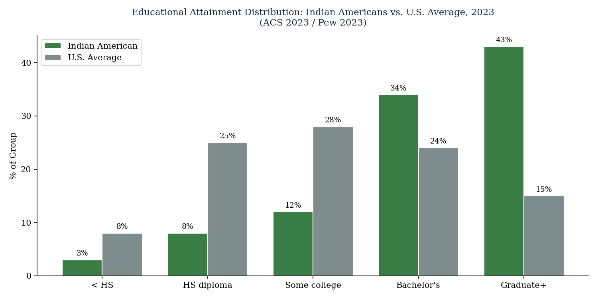
| Component | Dollar Amount | Share of Gap | Interpretation |
|---|---|---|---|
| Endowment Effect | $25,240 | 50% | Higher education levels |
| Returns Effect | $15,310 | 30% | Higher pay at same credential level |
| Interaction Term | ~$9,800 | ~19% | Joint endowment × returns effect |
| Total Gap | $50,350 | 100% |
The income premium is not simply explained by more education. Even after controlling for the higher education distribution, 30% of the gap (about $15,000 per year) reflects higher earnings at equivalent credential levels. The education-income scatter confirms that occupation sorting is the mechanism: Indian Americans who hold the same degrees as other groups systematically end up in higher-paying specializations, a pattern consistent with H-1B visa selection concentrating workers in the highest-demand STEM fields.
The FBI has tracked anti-Hindu bias incidents in its Uniform Crime Reports since 1996. The 28-year series shows a clear and statistically significant upward trend: the OLS slope is +0.78 incidents per year with an R² of 0.74 (p < 0.001). That is not noise. Annual incidents averaged 7.3 in the early period from 1996 through 2005, rose to an average of 14.8 in the middle period from 2006 through 2015, and surged to 24.8 in the post-2019 period, a 3.4-fold increase from where the series started. The 2021 peak of 30 incidents and the 2023 figure of 31 are the highest annual totals in the reporting history.
The cross-religion comparison provides useful scale. The multi-group chart shows Hindu incidents relative to anti-Sikh and anti-Christian targeting over the same 28-year period. Anti-Sikh incidents surged in the years immediately following September 11, 2001, driven by visual misidentification of Sikhs as Muslim, and have remained volatile. Anti-Hindu incidents follow a different trajectory: a slower but more sustained upward drift, without the post-9/11 spike, suggesting a distinct targeting dynamic that is less event-driven and more chronic. By the late 2010s, the Hindu trend line has converged with and, in some years, exceeded the Sikh line in absolute terms.
The direct Hindu-Sikh comparison by period sharpens this point. In the early period (1996–2005), Sikh incidents substantially exceeded Hindu incidents on a per-year basis. By the most recent period (2020–2023), that gap has narrowed significantly, with Hindu incidents now running at roughly similar absolute levels. Both communities are experiencing worsening conditions; the convergence is a function of Hindu incidents rising faster, not Sikh incidents declining.
The post-2020 spike sits within a broader surge in anti-Asian and anti-South Asian sentiment documented during the COVID-19 pandemic. The timing and scale are consistent with what Stop AAPI Hate documented for South Asian communities more broadly, though Hindu-specific targeting has its own distinct characteristics in terms of offense type and target. Vandalism and property destruction account for 48% of anti-Hindu incidents, compared to 39% for all religious bias crimes combined, consistent with targeting Hindu institutions and temples rather than individuals, though personal assaults are not absent from the record.
$t$ is calendar year. The positive slope indicates a statistically robust upward trend of approximately 0.78 additional incidents per year over the 28-year period. The high $R^2$ of 0.74 reflects the consistency of the trend rather than cyclical noise.
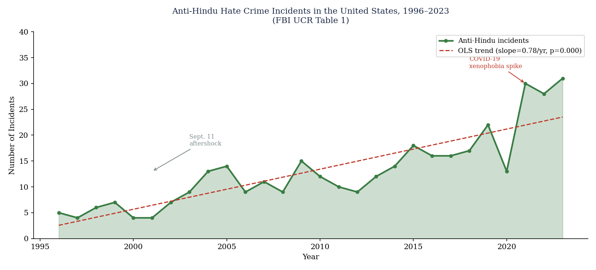
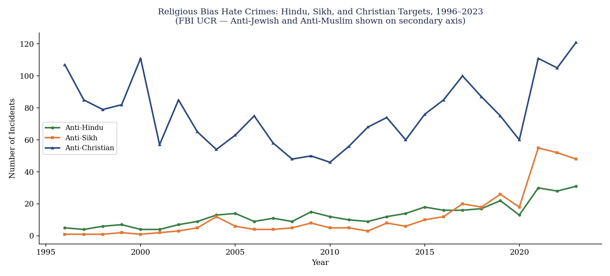
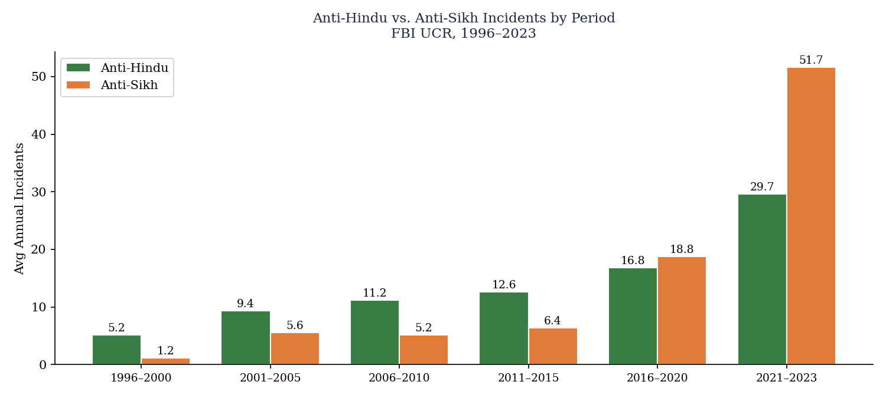
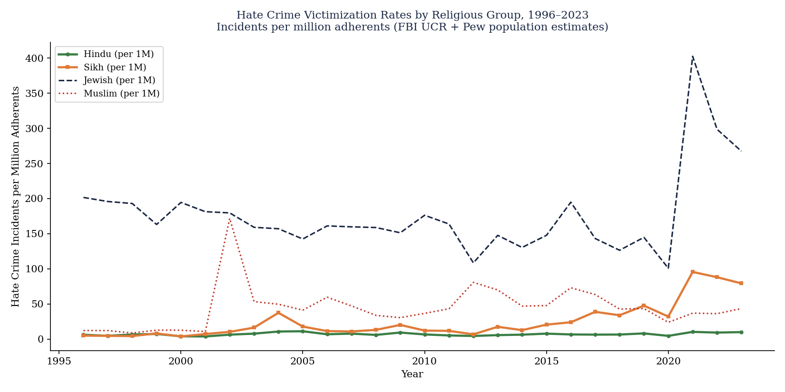
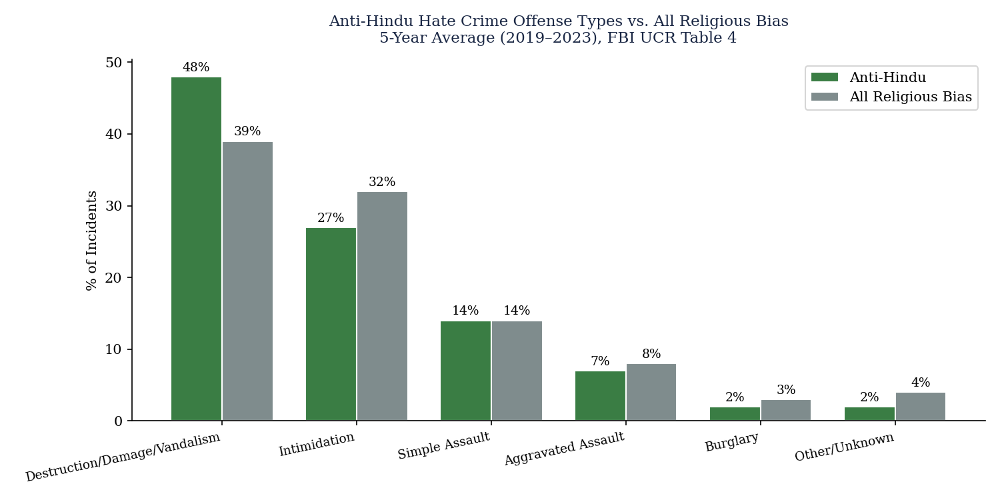
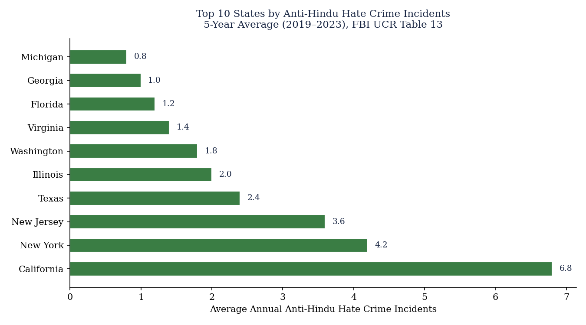
| Period | Annual Average | vs. Early Period |
|---|---|---|
| Early (1996–2005) | 7.3 incidents / yr | baseline |
| Middle (2006–2015) | 14.8 incidents / yr | 2.0× |
| Post-2019 (2020–2023) | 24.8 incidents / yr | 3.4× |
| 2023 (single year) | 31 incidents | Record high |
Anti-Hindu hate incidents have nearly tripled since the early reporting period, with 2023 setting a new record at 31 incidents. The Hindu-Sikh comparison reveals a distinctive dynamic: unlike the event-driven Sikh spike post-9/11, the Hindu trend is a chronic upward drift that has now brought Hindu absolute counts to near-parity with Sikh counts in recent years. The offense profile, predominantly property and intimidation targeting Hindu institutions, points to communal harassment as the primary mode of targeting.
Beyond economic outcomes, Pew's 2023 survey of Indian Americans provides a picture of how Hindu Americans relate to their faith and to civic life. Religious practice is moderate by American standards: 45% say religion is "very important" in their lives, lower than evangelical Christians at 79% or Muslims at 72%, but comparable to mainline Protestants. Cultural observance is higher than devotional intensity: 78% observe major Hindu festivals and 42% meditate weekly. Vegetarianism is practiced by 32%, substantially above the U.S. average of around 5%.
Politically, Hindu Americans lean strongly Democratic: 65% identify as or lean Democrat, compared to 48% nationally. This partisan gap is large and is consistent with patterns seen among other highly educated immigrant groups. The most likely drivers are ideological alignment on social and immigration issues and a community response to anti-immigrant political rhetoric that has periodically targeted South Asian communities specifically.
The radar profile chart brings the full community picture into one visualization: education, income, STEM concentration, degree attainment, and civic participation, all indexed to the U.S. average. The result is a profile with no weak dimensions: Hindu Americans are above the national average on every axis, and the combined radar shape confirms what the individual sections show separately: this is one of the most structurally advantaged groups in the U.S. economic landscape, yet hate crime incidents are trending steadily upward against that backdrop.
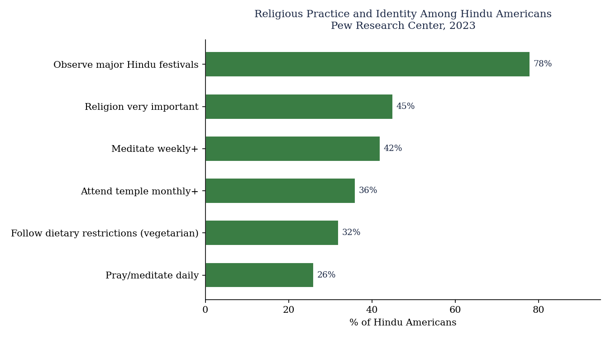
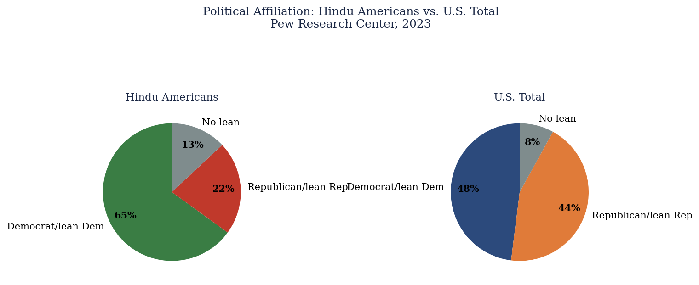
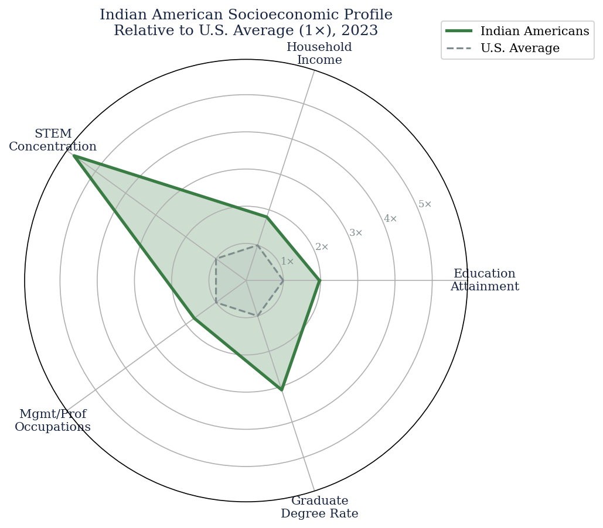
Hindu American political identity is distinct: a 17-percentage-point Democratic lean over the national average, combined with moderate religious observance and strong cultural identity markers. The radar profile confirms what every section has documented individually: this is a community that outperforms the national average across every measurable economic dimension, making the worsening hate crime trajectory all the more anomalous in the data.
Because the U.S. Census does not ask about religion, this paper deploys two complementary identification strategies: Indian ancestry or nativity in ACS microdata as a large-sample Hindu proxy (justified by Pew's finding that ~75% of Indian Americans identify as Hindu), and direct religious self-identification from Pew survey data. Income decomposition follows the Kitagawa (1955) standardization approach using grouped education-earnings data. Hate crime analysis uses OLS trend regression on the full 1996–2023 FBI UCR series with per-capita normalization using Pew population denominators. The Hindu vs. non-Hindu Indian American comparison uses Pew 2023 microdata splits; the cross-group education-income scatter uses ACS 2023 Selected Population Profiles.
| Data Source | Sample / Coverage | Use in This Paper |
|---|---|---|
| ACS 2023 (Census Bureau) | ~3M+ Indian-ancestry respondents | Educational attainment, income, occupation, nativity, geography |
| Pew Religious Landscape Study (2014) | n ≈ 35,000; Hindu n ≈ 190 | Cross-religious education and income comparisons |
| Pew Indian Americans Survey (2023) | n ≈ 3,000 | Hindu/non-Hindu splits, income distribution, generational analysis, identity, political affiliation |
| FBI UCR Hate Crime Statistics | 1996–2023 (28 years) | Anti-Hindu, Sikh, and cross-religion incident counts, offense types, geographic distribution, per-capita rates |
| Census CPS Table A-3 | 1975–2023 | Education-earnings profiles used in Kitagawa decomposition |
The income decomposition methodology draws on Kitagawa (1955) for the standardization approach and parallels the Blinder (1973) framework. Immigrant assimilation and intergenerational regression are contextualized using Borjas (1992) and Portes and Rumbaut (2001). Occupational sorting among Asian Americans draws on Sakamoto, Goyette, and Kim (2009). The post-2020 anti-Asian hate crime context draws on Stop AAPI Hate (2021).